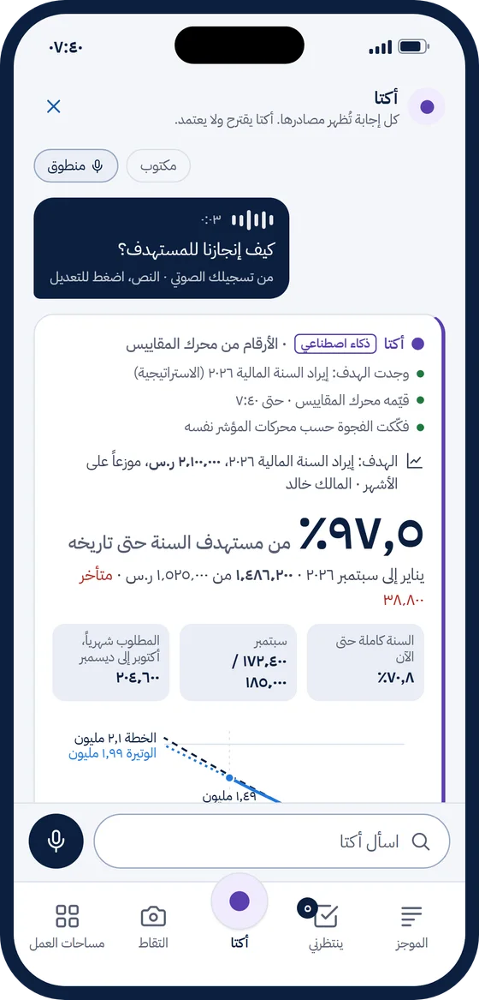
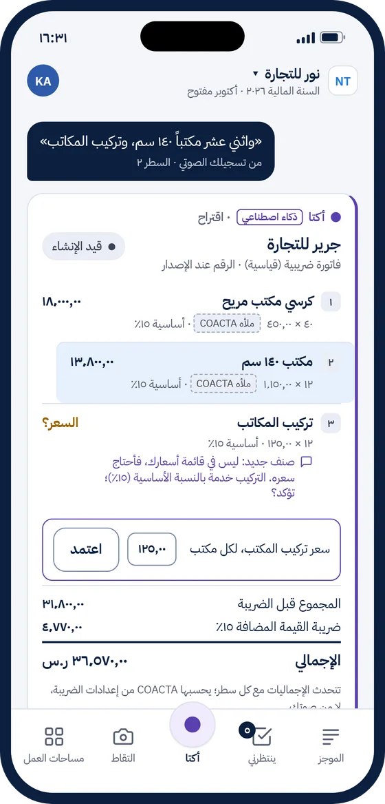
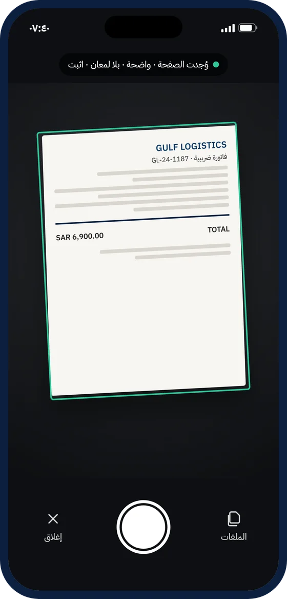
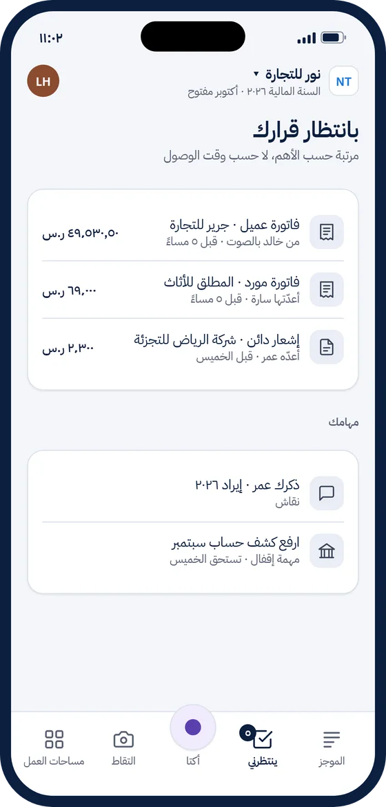
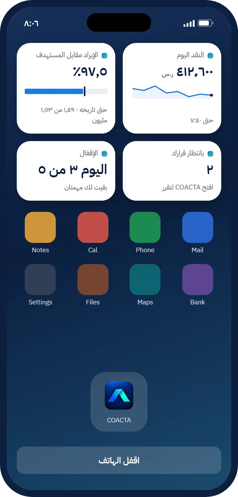
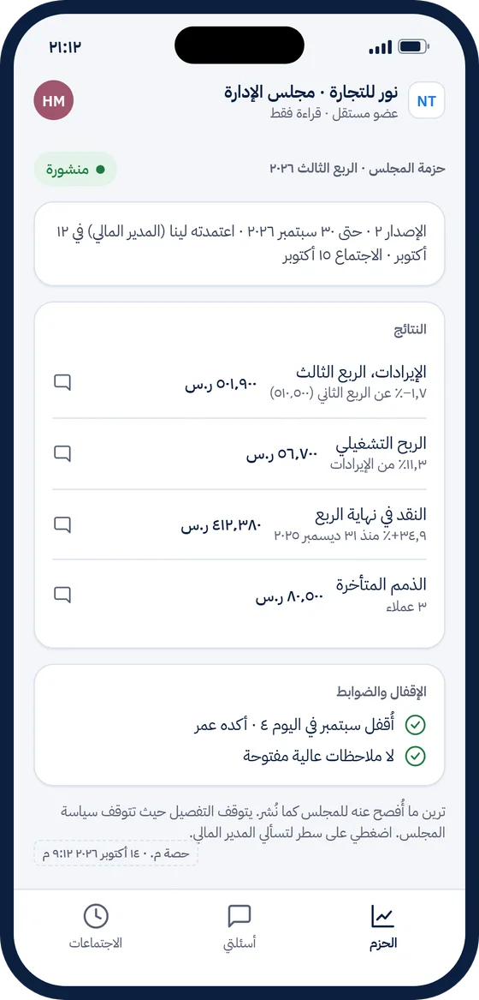

Intelligence Acts Together
نظام تشغيل الأعمال، حيث يعمل الذكاء معًا
كو أكتا منصة صمّمتها وطوّرتها دييب بزنس بارتنرز. يعمل فيها الناس ووكلاء الذكاء الاصطناعي والروبوتات والأنظمة فريقًا واحدًا يُكمّل بعضه بعضًا لإدارة المالية والأعمال، بحوكمة تُطلق الابتكار وتحميه. منصة المنشأة التكاملية.

لماذا بنينا كو أكتا
قدّمنا المالية كخدمة منذ ٢٠٢٣ على أنظمة رائدة، ورأينا أين تتوقف: أنظمة لأقسام منفصلة، ومرفقات لا يفهمها النظام، وأرقام تحتاج من يجمعها ويشرحها. بنينا كو أكتا لنعالج هذه المشكلات من الأساس.
- دفاتر لا تُعدَّل بعد الترحيليبقى كل قيد مرحَّل كما هو، وأي تصحيح يكون قيدًا جديدًا يشير إلى الأصل، وتكشف سلسلة تحقق أي عبث.
- المعايير الدولية ومتطلبات هيئة الزكاة والضريبة والجمارك من التصميمالمعايير الدولية للتقارير المالية، وضريبة القيمة المضافة والفوترة الإلكترونية في السعودية، جزء من البناء لا إضافة لاحقة.
- مستندات يفهمها النظاميفهم النظام كل مستند: ما هو، ولمن هو، وما أثره، قبل أن تبدأ المحاسبة.
- وكلاء ذكاء اصطناعي تحت الحوكمةيعمل الوكلاء ضمن صلاحيات وضوابط واضحة، ويقترحون ويشرحون، والقرار يبقى للإنسان.
- تطبيقات لكل مرحلةالإقفال والتقارير والقيادة والاستراتيجية وغيرها، منتجات متكاملة تقوم على أساس واحد.
- للشركات الناشئة ومكاتب المحاسبةمن شركة المؤسس الواحد إلى مكاتب المحاسبة التي تخدم عملاء كثيرين.
حوكمة تُطلق الابتكار وتحميه.
تعمل الضوابط عند لحظة الالتزام، وتُمنح الصلاحيات مسبقًا، فتتحرك الفرق بسرعة وتبقى الأعمال في أمان.
مشكلات تعيشها الأعمال اليوم
ليست ميزات ناقصة، بل طريقة بناء الأنظمة نفسها. وهذه إجابة كو أكتا عن كل منها:
-
حدود مصمَّمة بين الأقساماليومتطبيقات منفصلة لكل قسم، تربطها واجهات برمجية، ويبقى أصحاب المصلحة خارجها.كو أكتامسار عمل واحد من البداية إلى النهاية، يدخله كل أصحاب المصلحة وفق قواعد إفصاح واضحة.

من أول تواصل إلى التحصيل، مسار واحد. -
محاسبة بمعزل عن الأعمالاليومنظام بُني ليعمل فيه المحاسبون وحدهم، بعيدًا عن القرار.كو أكتامالية جزء من العمل نفسه: تتحدث وتتصرف وتشارك في القرار.

القوائم المالية مساحة عمل واحدة للمالية والإدارة، ومعها «سبتمبر في دقيقة»، بلغة يفهمها المؤسس. -
شاشات ثابتة تحتاج خبرة تقنيةاليومشاشة لكل معاملة، وعلى المستخدم أن يعرف أين يذهب وماذا يملأ.كو أكتاالشاشة تتشكّل حول ما تريد إنجازه ودورك، وتسأل فقط عمّا يلزم.

صفحتك الرئيسية، حيث يجري العمل. -
نظرة إلى الماضي لا إلى المستقبلاليومتأتي الضوابط والتقارير بعد وقوع الحدث، عند إقفال نهاية الشهر.كو أكتاضوابط عند لحظة الالتزام، وإقفال مستمر، وأرقام تستشرف القادم.

قرّر. التزم. تعلّم. -
فجوة الاكتمالاليومأحداث تقع في الأعمال ولا تصل إلى الدفاتر، فتأتي القوائم ناقصة وتتكرر إعادة إصدارها.كو أكتايقارن أحداث الأعمال بالدفاتر، ويكتشف ما لم يُسجَّل، ويقترح القيود.

رؤية. إجراء. أثر. -
أشهر حتى تظهر القيمة، ثم جمود لسنواتاليوممشروع تطبيق طويل بعيد عن العمل، ثم تصميم ثابت إلى أن يُعاد التطبيق من الصفر.كو أكتاقيمة أولى سريعة، ونظام يتطور مع العمل، وكل تغيير بنسخة موثّقة.

أعمالك في نظرة واحدة.
على المعصم، وفي السيارة، وفي الاجتماع.
كو أكتا معك أينما كنت، بالضوابط نفسها التي على الويب.
- في النادي الرياضيالهدف والنقد في لمحة.
- أثناء القيادةبالصوت فقط؛ والاعتمادات تنتظر.
- في اجتماعيُجهَّز الطلب مسودةً، ويؤكّده شخص.
كو أكتا للجوال
مصمَّم للعمل السريع أثناء التنقّل، لا نسخة مصغّرة من الويب.

اسأل بصوتك، وشاهد الرقم ومن أين تأتي الفجوة. 
أملِ الفاتورة، وراجع كل سطر. 
صوّر الفاتورة، فتسلك مسار كل فاتورة. 
قرّر بلمستين، والدليل على بُعد لمسة. 
أعمالك في لمحة، وبما تسمح به فقط. 
حزمة المجلس في جيبك.
كو أكتا BUILD: نصمّم أعمالك معك
بدلًا من معالج إعداد بشاشات وحقول، نأخذك في رحلة لفهم أعمالك وتصميمها، مبنية على إطار Deep BUILD من دييب بزنس بارتنرز:
- احكِ عن أعمالك
بكلماتك، أو ارسمها: ماذا تبيع، ولمن، وكيف تعمل. - يقترح كو أكتا التصميم
دليل الحسابات والأبعاد والضوابط ودورة الإقفال، ولكل اقتراح سببه وبدائله. - أنت تقرّر
تقبل أو تعدّل أو تسأل مديرًا ماليًا في أي خطوة. - يتطور مع أعمالك
كلما تغيّرت أعمالك تطوّر التصميم، وكل تغيير بنسخة موثّقة.
من مختبر الابتكار
خرج كو أكتا من مختبر الابتكار المالي في دييب بزنس بارتنرز، ومن عمل حقيقي مع مؤسسين ومستثمرين في المنطقة.
قائمة الانتظار
نجهّز وصولًا مبكرًا لمجموعة مختارة من الشركات. انضم إلى قائمة الانتظار لتكون من أوائل مستخدمي كو أكتا عند إطلاقه، أو تحدّث مع خبير لتراه.
انضم إلى قائمة الانتظارلا نستخدم بياناتك إلا للتواصل معك بشأن كو أكتا.